Blake was a poet, painter, and engraver who wrote his poems, drew the pictures around them, and printed the pages himself. In 1794 he bound two sets of songs into one book, subtitled Shewing the Two Contrary States of the Human Soul. Read side by side, the same world looks very different depending on whether you see it through trust or through hard experience.
ContrariesWord and imageQuestions without answersSocial protestFaith and the Bible
Big Idea
Blake believed that truth needs both halves of a pair. Innocence without experience is naive, and experience without innocence is bitter. His paired poems make the reader hold both at once.
The Poet Who Was Also the Printer
Click any image to enlarge it for the whole class. In Blake's books the picture is part of the poem, so look at the images before you read.
The manBlake at about 50, painted by Thomas Phillips in 1807. He earned his living as an engraver while writing poems few people read.Thomas Phillips, 1807. Public domain, via Wikimedia Commons.InnocenceThe Lamb: soft curves, a child and an animal face to face, and text that trails like vines. The picture already says the world is gentle.William Blake, Songs of Innocence, 1789 (this copy c. 1794). Public domain, via Wikimedia Commons.ExperienceThe Tyger: a darker, heavier page. Many readers find Blake's tiger oddly mild-looking. Ask whether the picture agrees with the terror in the words.William Blake, Songs of Experience, 1794 (copy Y, 1825, Metropolitan Museum of Art). Public domain, via Wikimedia Commons.ProtestThe Chimney Sweeper: children were sent up soot-black chimneys in London. Blake wrote one version for each book, so the same suffering appears in both states.William Blake, Songs of Experience, 1794. Public domain, via Wikimedia Commons.The big pictureThe Ancient of Days: a creator measuring the world with compasses. Blake worried that cold, mechanical reasoning could shrink the imagination, and he drew that worry here.William Blake, frontispiece to Europe a Prophecy, 1794. Public domain, via Wikimedia Commons.
Two Contrary States: The Lamb and The Tyger
Blake published these poems in different books, one for each state. They ask the same question about the maker in opposite ways.
Songs of Innocence · 1789
The Lamb
Little Lamb who made thee
Dost thou know who made thee
Gave thee life & bid thee feed.
By the stream & o'er the mead;
Gave thee clothing of delight,
Softest clothing wooly bright;
Gave thee such a tender voice,
Making all the vales rejoice!
Little Lamb who made thee
Dost thou know who made thee
Little Lamb I'll tell thee,
Little Lamb I'll tell thee!
He is called by thy name,
For he calls himself a Lamb:
He is meek & he is mild,
He became a little child:
I a child & thou a lamb,
We are called by his name.
Little Lamb God bless thee.
Little Lamb God bless thee.
Songs of Experience · 1794
The Tyger
Tyger Tyger, burning bright,
In the forests of the night;
What immortal hand or eye,
Could frame thy fearful symmetry?
In what distant deeps or skies.
Burnt the fire of thine eyes?
On what wings dare he aspire?
What the hand, dare seize the fire?
And what shoulder, & what art,
Could twist the sinews of thy heart?
And when thy heart began to beat,
What dread hand? & what dread feet?
What the hammer? what the chain,
In what furnace was thy brain?
What the anvil? what dread grasp,
Dare its deadly terrors clasp!
When the stars threw down their spears
And water'd heaven with their tears:
Did he smile his work to see?
Did he who made the Lamb make thee?
Tyger Tyger burning bright,
In the forests of the night:
What immortal hand or eye,
Dare frame thy fearful symmetry?
Compare
The Lamb asks one question and answers it in the second stanza. The Tyger asks question after question and never answers. Look at the final stanza: the first stanza returns, but one word has changed. "Could frame" becomes "Dare frame." Blake shifts from is it possible? to who would have the nerve?
Close Reading: The Tyger, One Stanza at a Time
Pick a stanza. Read it aloud first, then read the note.
Innocence or Experience?
Blake's two voices sound different. Read each line and decide which book it belongs to. All six are quoted from the poems above.
Choose a book.
London: A City Read as a System
Blake lived in London his whole life and walked its streets. This poem is his walk, and each stanza names a group the city fails.
Songs of Experience · 1794
London
I wander thro' each charter'd street,
Near where the charter'd Thames does flow.
And mark in every face I meet
Marks of weakness, marks of woe.
In every cry of every Man,
In every Infants cry of fear,
In every voice: in every ban,
The mind-forg'd manacles I hear
How the Chimney-sweepers cry
Every blackning Church appalls,
And the hapless Soldiers sigh
Runs in blood down Palace walls
But most thro' midnight streets I hear
How the youthful Harlots curse
Blasts the new-born Infants tear
And blights with plagues the Marriage hearse
"charter'd"
A charter is a legal document that grants ownership or rights. Even the river is owned and licensed, and Blake makes that sound like a cage.
"mind-forg'd manacles"
The chains are made by minds. Forged by fear and habit, they are invisible, which makes them harder to break than iron.
Repetition of "every"
Count how many times "every" appears in stanza two. The suffering is everywhere, and the repetition makes the reader unable to look away.
Cry, sigh, curse, tear
The poem is built from what Blake hears. The institutions (Church, Palace, marriage) are named through the people they hurt.
Blake and Christianity
A Christian Against the Church?
Blake wrote about God, Jesus, and the Bible his whole life, and he attacked the churches of his day just as hard. To read him well, keep both facts in view at once, the way his Songs keep innocence and experience together.
Raised among Dissenters
Blake was baptized in the Church of England in 1757, but his family's sympathies lay with Dissenters, Protestants who worshipped outside the state church. His mother had belonged to London's Moravian congregation, known for its warm hymns about Jesus.
Jesus at the center
Blake's Jesus is a figure of forgiveness who breaks rules to heal people, not a lawgiver. In The Everlasting Gospel (c. 1818) he argues with readers who picture a polite, rule-keeping Christ.
Against "Thou shalt not"
His sharpest attacks fall on religion that controls people with fear, guilt, and rules, especially when church, crown, and money work together. Some readers call this position antinomian.
The Bible as the great source
Late in life Blake wrote around his engraving of the Laocoön statue: "The Old & New Testaments are the Great Code of Art." Most of his paintings illustrate Scripture.
Imagination as holy
For Blake, imagining was a spiritual act. In Jerusalem he wrote that he knew "of no other Christianity and of no other Gospel than the liberty both of body & mind to exercise the Divine Arts of Imagination."
No borrowed system
In 1789 Blake and his wife Catherine attended the first conference of the Swedenborgian New Jerusalem Church. Within a few years he was mocking Swedenborg in print. As a character in Jerusalem says, "I must Create a System, or be enslav'd by another Mans."
A fair question
Was Blake an orthodox Christian? By the standards of most churches, no: he built his own mythology and rejected much church teaching. Yet he called himself a Christian, centered his work on Jesus, and, by friends' accounts, died singing. Readers still argue about how to describe his faith. Your job here is to read what he wrote and support your claims with his words.
Religion in Two Contrary States
Several of the Songs come in matched pairs about faith, charity, and the church. Pick a pair and read the Innocence poem first. Then ask what the Experience poem sees that the first one misses, and what the first one keeps that the second has lost.
"And did those feet": The Poem That Became a Hymn
These four stanzas come from the preface to Blake's long poem Milton (c. 1804–1811). In 1916 Hubert Parry set them to music as "Jerusalem," and it is now one of the best-known hymns in England. Blake printed it with a line from the Bible underneath.
Preface to Milton · c. 1804–1811
And did those feet in ancient time
And did those feet in ancient time,
Walk upon Englands mountains green:
And was the holy Lamb of God,
On Englands pleasant pastures seen!
And did the Countenance Divine,
Shine forth upon our clouded hills?
And was Jerusalem builded here,
Among these dark Satanic Mills?
Bring me my Bow of burning gold:
Bring me my Arrows of desire:
Bring me my Spear: O clouds unfold!
Bring me my Chariot of fire!
I will not cease from Mental Fight,
Nor shall my Sword sleep in my hand:
Till we have built Jerusalem,
In Englands green & pleasant Land.
Would to God that all the Lords people were Prophets.
Numbers XI. ch 29 v.
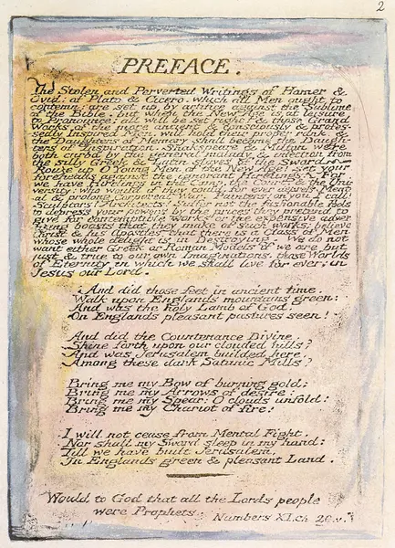
Word and imageThe printed page: a prose attack on copying the classical poets, then the four stanzas, then Moses' wish from Numbers 11:29 that everyone could be a prophet. Blake wanted every reader to have visions, not just priests.William Blake, Milton a Poem, plate 2, copy A (British Museum), printed c. 1811. Public domain, via the William Blake Archive and Wikimedia Commons.
A legend as a question
An old English legend says the young Jesus visited Britain with Joseph of Arimathea. Blake asks, "And did those feet...?" but never says yes. The honest answer is probably no, which turns the poem toward the future: if Jerusalem was not here, then we have to build it.
"the holy Lamb of God"
John the Baptist calls Jesus "the Lamb of God" (John 1:29). It is the same image as Blake's The Lamb: "He is called by thy name, / For he calls himself a Lamb."
"dark Satanic Mills"
The Albion Flour Mill, London's first great steam-powered factory, burned down in 1791 near Blake's home in Lambeth. Readers connect the line to factories, but also to anything that grinds people down mechanically, including schools and churches of rigid rules.
"Chariot of fire"
The prophet Elijah is carried to heaven in a chariot of fire (2 Kings 2:11). The speaker asks for a prophet's weapons, but the battle is "Mental Fight": the war is fought with imagination and ideas, not swords.
Jerusalem
In the Bible, the New Jerusalem is God's city coming down to earth (Revelation 21). For Blake it is also a society of mercy, art, and forgiveness that people can build here and now.
An irony to discuss
The hymn is sung at state occasions, sports matches, and in the established church Blake criticized. Does singing it together honor Blake's vision, or tame it?
The Book of Job: Blake's Last Great Work
In his late sixties, Blake engraved 21 illustrations to the Book of Job (published 1826). Job is a good man who loses everything and argues with God. Blake reads the story as a journey from rule-keeping religion to living vision. Compare the first plate with the last, then open the list below.
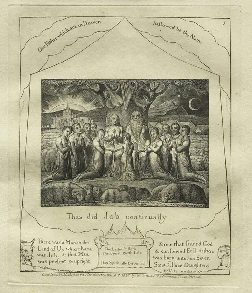
Plate 1 · the beginning"Thus did Job continually." Job's family prays with books open on their laps. The instruments hang silent in the tree. The sun is setting.William Blake, Illustrations of the Book of Job, plate 1, engraving, 1825 (published 1826). Cleveland Museum of Art, CC0, via Wikimedia Commons.
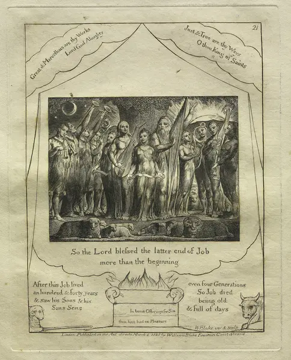
Plate 21 · the end"So the Lord blessed the latter end of Job more than the beginning." Same family, same tree, same flock. Everyone is standing and playing music. The sun is rising.William Blake, Illustrations of the Book of Job, plate 21, engraving, 1825 (published 1826). Cleveland Museum of Art, CC0, via Wikimedia Commons.
Spot the changes (open after you have looked)
Silent instruments vs. music. In plate 1 the instruments hang in the tree, like the exiles' harps hung on willows in Psalm 137. In plate 21 everyone plays. For Blake, art and song are a form of worship.
Books vs. no books. Plate 1's family reads from open books. In plate 21 the books are gone. Religion has moved from following the written rule to living it.
Sunset vs. sunrise. The light runs the other way. The ending is a new beginning.
The words on the altar. Plate 1's altar reads "The Letter Killeth / The Spirit giveth Life" (2 Corinthians 3:6). Plate 21's reads "In burnt Offerings for Sin thou hast had no Pleasure" (Hebrews 10:6). Both say God wants a changed heart more than rituals done correctly.
The border texts. Plate 1 opens with "Our Father which art in Heaven," and plate 21 ends with praise from Revelation 15:3: "Great & Marvellous are thy Works." Blake frames the story with prayer and praise.
Painting Scripture
Between about 1799 and 1805, Blake's patron Thomas Butts bought more than a hundred of his Bible paintings, often for about a guinea each. Click to enlarge. For each image, find the passage and ask: what did Blake choose to show, and what did he leave out?
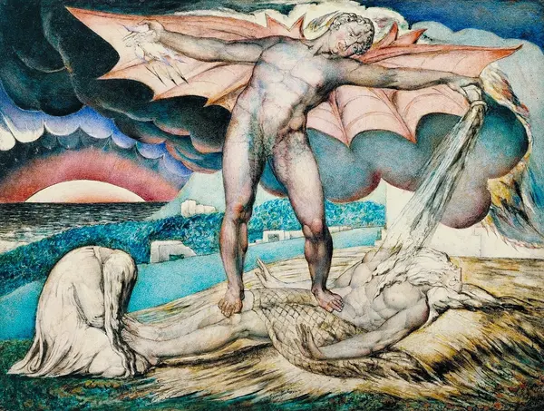
Job 2:7Satan Smiting Job with Sore Boils. Satan is powerful and beautiful, not a cartoon devil, and Job's wife grieves beside him. Suffering is shown at full strength before any answer comes.William Blake, c. 1826, tempera on mahogany. Tate, London. Public domain, via Wikimedia Commons.
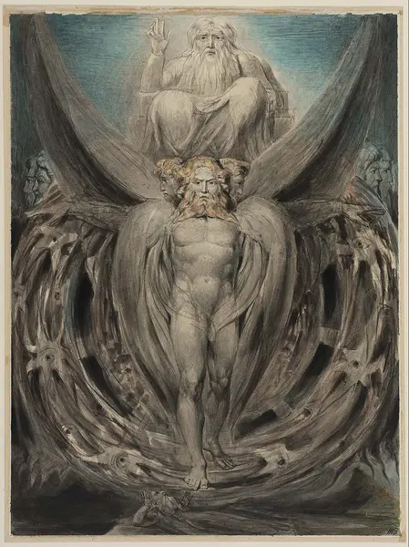
Ezekiel 1Ezekiel's Wheels. The four-faced creature, the wheels "full of eyes," and the throne above, with the prophet fallen on his face below. Compare it with Raphael's version in the Ezekiel lesson.William Blake, c. 1803–05, pen and watercolor. Museum of Fine Arts, Boston. Public domain, via Wikimedia Commons.
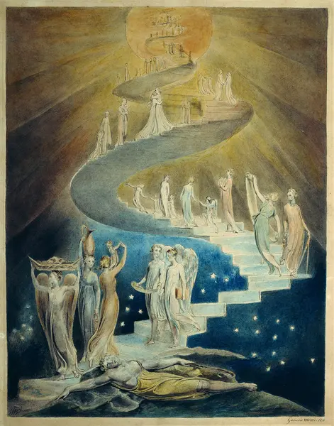
Genesis 28:12Jacob's Dream. The Bible says "ladder," but Blake draws a spiral staircase, and the angels carry bread, a jug, and books. Heaven and earth are in constant, friendly traffic.William Blake, c. 1805, pen and watercolor. British Museum, London. Public domain, via Wikimedia Commons.
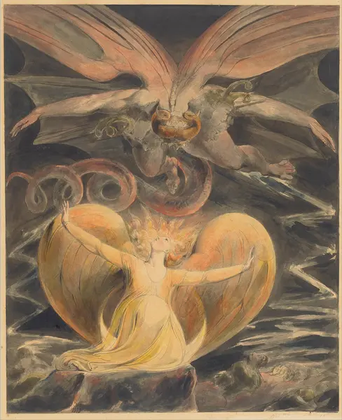
Revelation 12:1–4The Great Red Dragon and the Woman Clothed with the Sun. The dragon's wings fill the sky, yet the woman stands inside the sun with her arms open. Blake shows evil at full size and does not let it win the picture.William Blake, c. 1805, watercolor. National Gallery of Art, Washington, Rosenwald Collection. Public domain, via Wikimedia Commons.
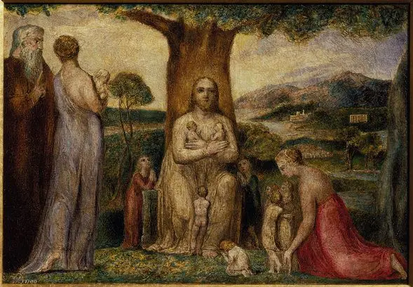
Mark 10:14Christ Blessing the Little Children. "Suffer the little children to come unto me." Children are at the center, which is also where Blake puts them in the Songs.William Blake, 1799, tempera on canvas. Tate, London. Public domain, via Wikimedia Commons.
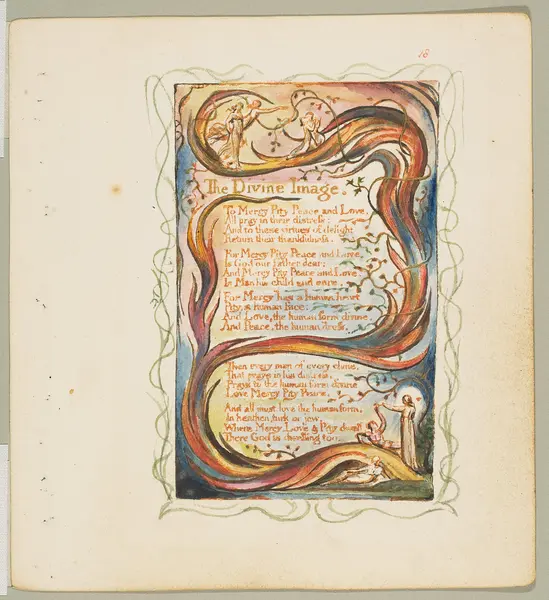
Songs of InnocenceThe Divine Image. A flame-shaped plant wraps the poem, and at the bottom a robed figure, usually read as Christ, lifts a man up from the ground. The picture shows mercy as an action.William Blake, copy Y, printed c. 1825. Metropolitan Museum of Art, CC0, via Wikimedia Commons.
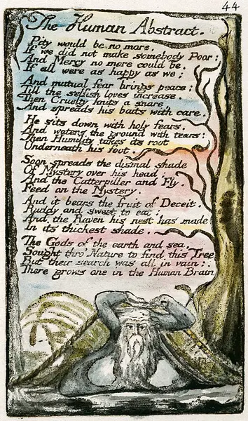
Songs of ExperienceThe Human Abstract. An old man, Blake's figure of cold law, is tangled in the ropes of his own net. Compare him with the rescued man on The Divine Image.William Blake, copy L, 1795. Yale Center for British Art. Public domain, via the William Blake Archive and Wikimedia Commons.
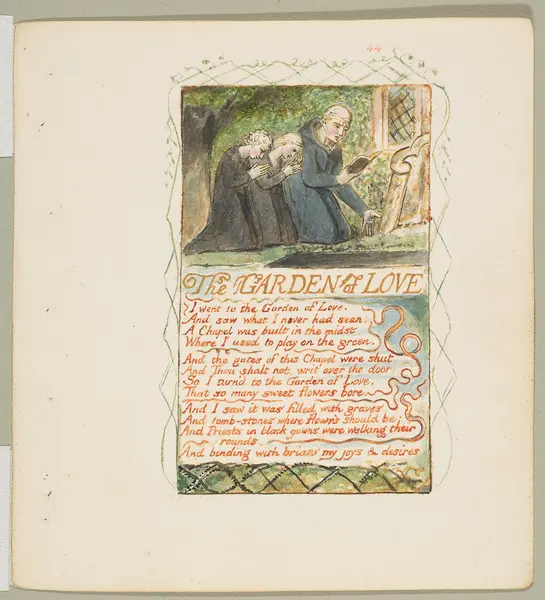
Songs of ExperienceThe Garden of Love. A priest reads from his book to two children kneeling at an open grave. Read the poem in the paired-poems explorer, then ask what lesson the children are learning.William Blake, copy Y, printed c. 1825. Metropolitan Museum of Art, CC0, via Wikimedia Commons.
Continue in Bible Studies: the Ezekiel and Isaiah lessons. In The Marriage of Heaven and Hell, Blake imagines that "The Prophets Isaiah and Ezekiel dined with me," and asks them how they dared to claim that God spoke to them.
Honor or Attack?
Blake praises some parts of Christianity and attacks others. For each line, decide which he is doing. Then name exactly what he honors or attacks.
Choose one.
Tools Blake Uses
Use these terms when you write about any of the poems.
Contraries
Opposites that need each other, like innocence and experience or the lamb and the tiger. Blake wrote, "Without Contraries is no progression."
Apostrophe
Speaking directly to something that cannot answer, as in "Little Lamb" and "Tyger Tyger." It makes the animal an audience.
Refrain
A repeated line or stanza. In The Tyger the return of stanza one shows how the poem circles a question it cannot settle.
Rhetorical question
A question asked for effect, not for an answer. The Tyger has almost no statements at all.
Forge imagery
Hammer, chain, furnace, anvil. Creation is described as blacksmithing, so the maker is both an artist and a laborer.
Word and image
Blake's plates are meant to be read together. Ask what the picture adds, what it contradicts, and what it leaves out.
Blake's Life in Brief
1757: Born in Soho, London, the son of a hosier, and baptized at St James's Church, Piccadilly. He reports seeing visions from childhood, including a tree full of angels.
1772: Apprenticed to the engraver James Basire, learning the craft he will use for the rest of his life.
1782: Marries Catherine Boucher, who later helps him print and color his books.
1789: Prints Songs of Innocence, the year the French Revolution begins. He and Catherine attend the first conference of the Swedenborgian New Jerusalem Church.
c. 1790–1793: Writes The Marriage of Heaven and Hell, satirizing Swedenborg and conventional ideas of good and evil.
1794: Publishes Songs of Experience and combines the two into one book.
c. 1799–1805: Paints more than a hundred Bible scenes for his patron Thomas Butts.
1804–1808: Writes the preface to Milton that later becomes the hymn "Jerusalem."
c. 1818: Drafts The Everlasting Gospel, his poem about who Jesus really was.
1823–1826: Engraves Illustrations of the Book of Job, his last completed series.
1827: Dies at home in London, largely unknown; friends said he sang hymns in his last hours. He is buried in Bunhill Fields, the Dissenters' burial ground. Later poets and artists rediscover him.
Try It Yourself
Blake's pairs work like a conversation. Join it.
Discuss
Blake asks, "Did he who made the Lamb make thee?" What would each possible answer (yes, no, maybe) mean for how we think about the world's gentleness and its danger?
Compare
Pick one line from The Lamb and one from The Tyger. Explain how the sounds differ. Try reading each aloud and note what your voice does.
Write a pair
Choose a single subject (a school, a river, a phone). Write four lines from an Innocence view and four from an Experience view, using questions in one and statements in the other.
Faith in pairs
Read The Divine Image and The Human Abstract. Both talk about mercy and pity. Write one paragraph explaining how the same words can describe love in one poem and a trap in the other.
Design
Sketch a plate for one of your lines. Where does the text go, and what does your image add that the words do not?
Blake's poems are in the public domain. Texts follow the wording and spelling of his original printings. Images are from Wikimedia Commons and are public domain or CC0; the Christianity images are stored on this site, with each museum credited in its caption. Explore the complete illuminated books at the William Blake Archive.


.jpg?width=500)